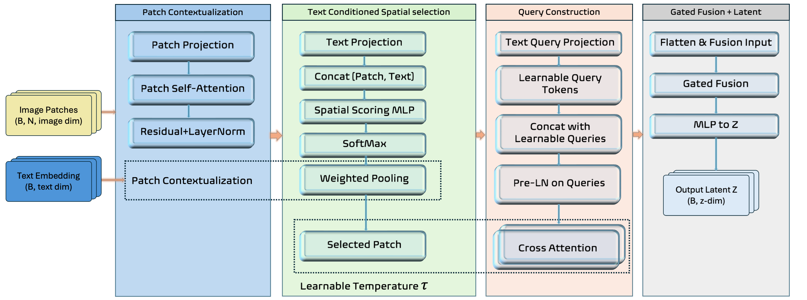
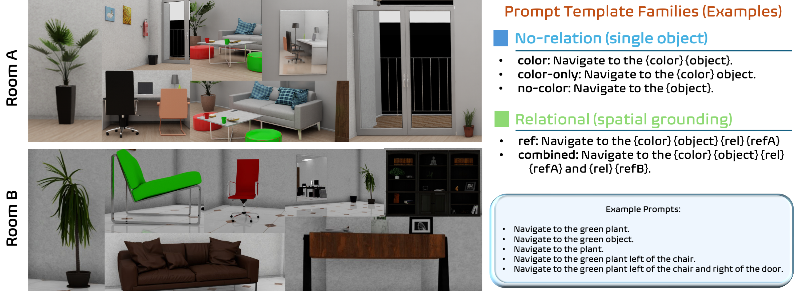
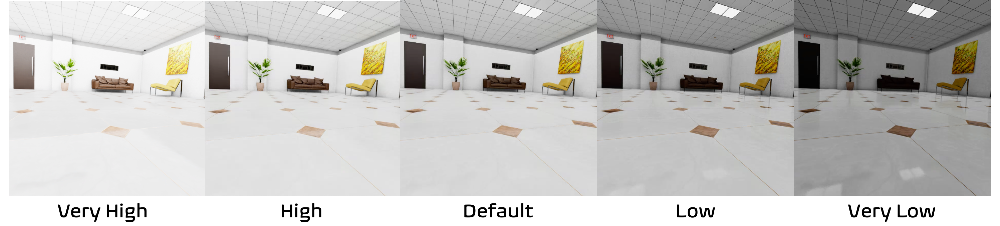
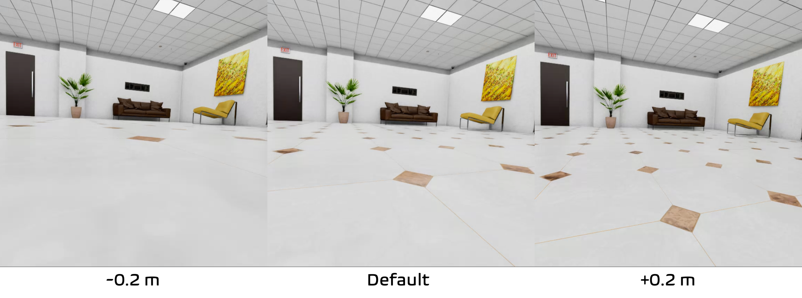

Overview of latent representation alignment with a frozen privileged policy. An
expert policy is first trained using privileged state observations and induces a task-relevant latent
representation sufficient for control. Rollouts collected from this policy provide supervision for
learning a lightweight adapter on top of a pre-trained vision–language model (VLM). The adapter aligns
image and text embeddings to the expert’s latent space, while the expert policy and action head remain
frozen. At deployment, actions are produced by mapping visual and language inputs through the VLM and
adapter into the expert-defined latent space and reusing the frozen action head.
Abstract
We propose LCLA (Language-Conditioned Latent Alignment), a framework for vision-language navigation that
learns modular perception–action interfaces by aligning sensory observations to a latent representation
of an expert policy. The expert is first trained with privileged state information, inducing a latent
space sufficient for control, after which its latent interface and action head are frozen. A lightweight
adapter is then trained to map raw visual–language observations, via a frozen vision–language model,
into the expert's latent space, reducing the problem of visuomotor learning to supervised latent
alignment rather than end-to-end policy optimization. This decoupling enforces a stable contract between
perception and control, enabling expert behavior to be reused across sensing modalities and
environmental variations. We instantiate LCLA and evaluate it on a vision-language indoor navigation
task, where aligned latent spaces yield strong in-distribution performance and robust zero-shot
generalization to unseen environments, lighting conditions, and viewpoints while remaining lightweight
at inference time.
Project Video
Methodology - LCLA Adapter

Architecture of the Language Conditioned Latent Alignment Adapter (LCLAA).
The model takes image patches and a text embedding as input. (1) Patches are first contextualized
via self-attention. (2) A spatial bottleneck then uses text-conditioned importance scores to select
relevant visual context (soft selection). (3) A query generation module combines the text embedding
with learnable queries. (4) These queries attend to the selected visual context through stacked
cross-attention blocks. (5) Finally, a gated fusion mechanism combines the processed queries with
the original text residual to produce the aligned latent representation Z.
Environments and Generalization

The left panels show two example indoor environments (Room A and Room B) with diverse
furniture, objects, and layouts, illustrating the visual complexity encountered during training. The
right panel summarizes the structured language prompt templates used for adapter training.
Controlled linguistic variation and spatial relations encourage compositional understanding and
support generalization to OOD objects, layouts, and relational configurations at evaluation time.
Robustness to Variations

Out-of-distribution robustness to lighting variation. Performance degrades gracefully
under extreme lighting conditions, indicating reduced reliance on low-level visual statistics.

Out-of-distribution robustness to camera pose variation. Performance remains stable
across camera offsets, demonstrating robustness to moderate viewpoint changes.